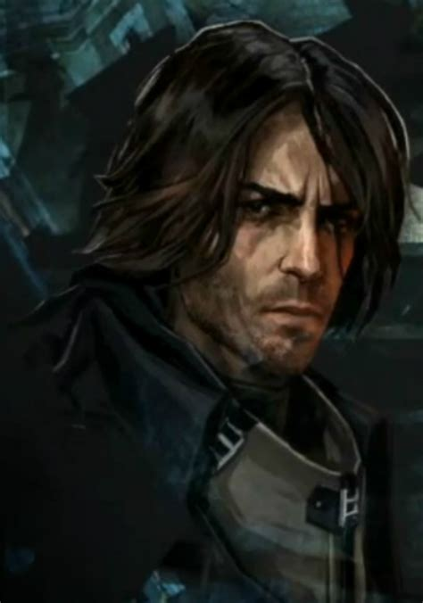
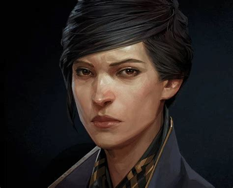
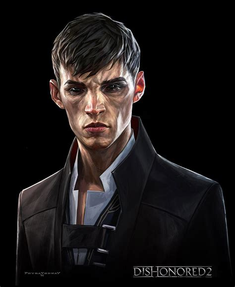
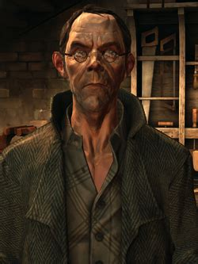
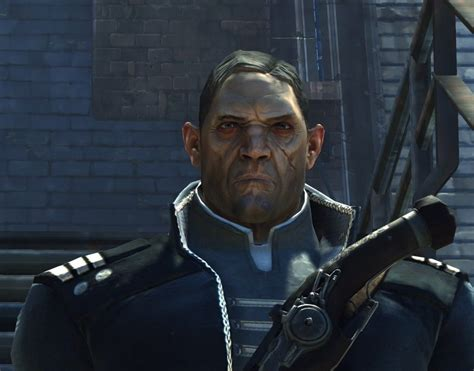
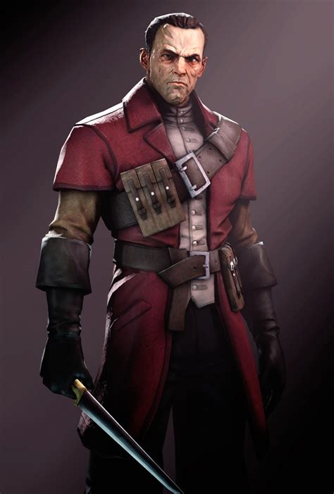

Corvo Attano
A disgraced protector hunting truth through alleys, rooftops, and blood-soaked halls.
Key Figures
Assassins, nobles, and visionaries pulling the city toward ruin or redemption.

A disgraced protector hunting truth through alleys, rooftops, and blood-soaked halls.

The last heir to the throne, burdened with rebuilding an empire that no longer trusts itself.

An immortal observer granting power to those willing to break the natural order.

Brilliant and unstable, his whale-oil inventions keep the city alive and under control.

A loyalist leader whose promises of justice grow darker with every victory.

Legendary assassin and commander of the Whalers, feared in every district of Dunwall.